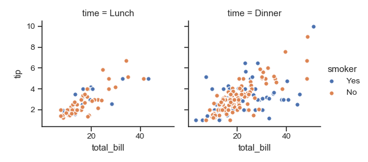
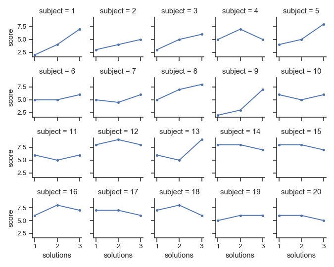
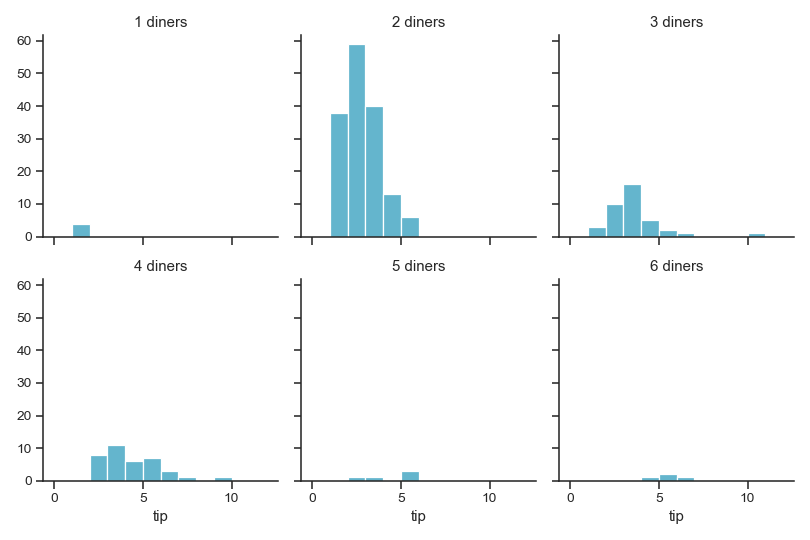

seaborn.FacetGrid¶
-
class
seaborn.FacetGrid(data, row=None, col=None, hue=None, col_wrap=None, sharex=True, sharey=True, height=3, aspect=1, palette=None, row_order=None, col_order=None, hue_order=None, hue_kws=None, dropna=True, legend_out=True, despine=True, margin_titles=False, xlim=None, ylim=None, subplot_kws=None, gridspec_kws=None, size=None)¶ Multi-plot grid for plotting conditional relationships.
-
__init__(self, data, row=None, col=None, hue=None, col_wrap=None, sharex=True, sharey=True, height=3, aspect=1, palette=None, row_order=None, col_order=None, hue_order=None, hue_kws=None, dropna=True, legend_out=True, despine=True, margin_titles=False, xlim=None, ylim=None, subplot_kws=None, gridspec_kws=None, size=None)¶ Initialize the matplotlib figure and FacetGrid object.
This class maps a dataset onto multiple axes arrayed in a grid of rows and columns that correspond to levels of variables in the dataset. The plots it produces are often called “lattice”, “trellis”, or “small-multiple” graphics.
It can also represent levels of a third variable with the
hueparameter, which plots different subsets of data in different colors. This uses color to resolve elements on a third dimension, but only draws subsets on top of each other and will not tailor thehueparameter for the specific visualization the way that axes-level functions that accepthuewill.When using seaborn functions that infer semantic mappings from a dataset, care must be taken to synchronize those mappings across facets (e.g., by defing the
huemapping with a palette dict or setting the data type of the variables tocategory). In most cases, it will be better to use a figure-level function (e.g.relplot()orcatplot()) than to useFacetGriddirectly.The basic workflow is to initialize the
FacetGridobject with the dataset and the variables that are used to structure the grid. Then one or more plotting functions can be applied to each subset by callingFacetGrid.map()orFacetGrid.map_dataframe(). Finally, the plot can be tweaked with other methods to do things like change the axis labels, use different ticks, or add a legend. See the detailed code examples below for more information.See the tutorial for more information.
- Parameters
- dataDataFrame
Tidy (“long-form”) dataframe where each column is a variable and each row is an observation.
- row, col, huestrings
Variables that define subsets of the data, which will be drawn on separate facets in the grid. See the
*_orderparameters to control the order of levels of this variable.- col_wrapint, optional
“Wrap” the column variable at this width, so that the column facets span multiple rows. Incompatible with a
rowfacet.- share{x,y}bool, ‘col’, or ‘row’ optional
If true, the facets will share y axes across columns and/or x axes across rows.
- heightscalar, optional
Height (in inches) of each facet. See also:
aspect.- aspectscalar, optional
Aspect ratio of each facet, so that
aspect * heightgives the width of each facet in inches.- palettepalette name, list, or dict, optional
Colors to use for the different levels of the
huevariable. Should be something that can be interpreted bycolor_palette(), or a dictionary mapping hue levels to matplotlib colors.- {row,col,hue}_orderlists, optional
Order for the levels of the faceting variables. By default, this will be the order that the levels appear in
dataor, if the variables are pandas categoricals, the category order.- hue_kwsdictionary of param -> list of values mapping
Other keyword arguments to insert into the plotting call to let other plot attributes vary across levels of the hue variable (e.g. the markers in a scatterplot).
- legend_outbool, optional
If
True, the figure size will be extended, and the legend will be drawn outside the plot on the center right.- despineboolean, optional
Remove the top and right spines from the plots.
- margin_titlesbool, optional
If
True, the titles for the row variable are drawn to the right of the last column. This option is experimental and may not work in all cases.- {x, y}lim: tuples, optional
Limits for each of the axes on each facet (only relevant when share{x, y} is True).
- subplot_kwsdict, optional
Dictionary of keyword arguments passed to matplotlib subplot(s) methods.
- gridspec_kwsdict, optional
Dictionary of keyword arguments passed to matplotlib’s
gridspecmodule (viaplt.subplots). Ignored ifcol_wrapis notNone.
See also
Examples
Initialize a 2x2 grid of facets using the tips dataset:
>>> import seaborn as sns; sns.set(style="ticks", color_codes=True) >>> tips = sns.load_dataset("tips") >>> g = sns.FacetGrid(tips, col="time", row="smoker")

Draw a univariate plot on each facet:
>>> import matplotlib.pyplot as plt >>> g = sns.FacetGrid(tips, col="time", row="smoker") >>> g = g.map(plt.hist, "total_bill")

(Note that it’s not necessary to re-catch the returned variable; it’s the same object, but doing so in the examples makes dealing with the doctests somewhat less annoying).
Pass additional keyword arguments to the mapped function:
>>> import numpy as np >>> bins = np.arange(0, 65, 5) >>> g = sns.FacetGrid(tips, col="time", row="smoker") >>> g = g.map(plt.hist, "total_bill", bins=bins, color="r")

Plot a bivariate function on each facet:
>>> g = sns.FacetGrid(tips, col="time", row="smoker") >>> g = g.map(plt.scatter, "total_bill", "tip", edgecolor="w")

Assign one of the variables to the color of the plot elements:
>>> g = sns.FacetGrid(tips, col="time", hue="smoker") >>> g = (g.map(plt.scatter, "total_bill", "tip", edgecolor="w") ... .add_legend())
Change the height and aspect ratio of each facet:
>>> g = sns.FacetGrid(tips, col="day", height=4, aspect=.5) >>> g = g.map(plt.hist, "total_bill", bins=bins)

Specify the order for plot elements:
>>> g = sns.FacetGrid(tips, col="smoker", col_order=["Yes", "No"]) >>> g = g.map(plt.hist, "total_bill", bins=bins, color="m")

Use a different color palette:
>>> kws = dict(s=50, linewidth=.5, edgecolor="w") >>> g = sns.FacetGrid(tips, col="sex", hue="time", palette="Set1", ... hue_order=["Dinner", "Lunch"]) >>> g = (g.map(plt.scatter, "total_bill", "tip", **kws) ... .add_legend())

Use a dictionary mapping hue levels to colors:
>>> pal = dict(Lunch="seagreen", Dinner="gray") >>> g = sns.FacetGrid(tips, col="sex", hue="time", palette=pal, ... hue_order=["Dinner", "Lunch"]) >>> g = (g.map(plt.scatter, "total_bill", "tip", **kws) ... .add_legend())

Additionally use a different marker for the hue levels:
>>> g = sns.FacetGrid(tips, col="sex", hue="time", palette=pal, ... hue_order=["Dinner", "Lunch"], ... hue_kws=dict(marker=["^", "v"])) >>> g = (g.map(plt.scatter, "total_bill", "tip", **kws) ... .add_legend())

“Wrap” a column variable with many levels into the rows:
>>> att = sns.load_dataset("attention") >>> g = sns.FacetGrid(att, col="subject", col_wrap=5, height=1.5) >>> g = g.map(plt.plot, "solutions", "score", marker=".")
Define a custom bivariate function to map onto the grid:
>>> from scipy import stats >>> def qqplot(x, y, **kwargs): ... _, xr = stats.probplot(x, fit=False) ... _, yr = stats.probplot(y, fit=False) ... sns.scatterplot(xr, yr, **kwargs) >>> g = sns.FacetGrid(tips, col="smoker", hue="sex") >>> g = (g.map(qqplot, "total_bill", "tip", **kws) ... .add_legend())

Define a custom function that uses a
DataFrameobject and accepts column names as positional variables:>>> import pandas as pd >>> df = pd.DataFrame( ... data=np.random.randn(90, 4), ... columns=pd.Series(list("ABCD"), name="walk"), ... index=pd.date_range("2015-01-01", "2015-03-31", ... name="date")) >>> df = df.cumsum(axis=0).stack().reset_index(name="val") >>> def dateplot(x, y, **kwargs): ... ax = plt.gca() ... data = kwargs.pop("data") ... data.plot(x=x, y=y, ax=ax, grid=False, **kwargs) >>> g = sns.FacetGrid(df, col="walk", col_wrap=2, height=3.5) >>> g = g.map_dataframe(dateplot, "date", "val")

Use different axes labels after plotting:
>>> g = sns.FacetGrid(tips, col="smoker", row="sex") >>> g = (g.map(plt.scatter, "total_bill", "tip", color="g", **kws) ... .set_axis_labels("Total bill (US Dollars)", "Tip"))

Set other attributes that are shared across the facetes:
>>> g = sns.FacetGrid(tips, col="smoker", row="sex") >>> g = (g.map(plt.scatter, "total_bill", "tip", color="r", **kws) ... .set(xlim=(0, 60), ylim=(0, 12), ... xticks=[10, 30, 50], yticks=[2, 6, 10]))

Use a different template for the facet titles:
>>> g = sns.FacetGrid(tips, col="size", col_wrap=3) >>> g = (g.map(plt.hist, "tip", bins=np.arange(0, 13), color="c") ... .set_titles("{col_name} diners"))
Tighten the facets:
>>> g = sns.FacetGrid(tips, col="smoker", row="sex", ... margin_titles=True) >>> g = (g.map(plt.scatter, "total_bill", "tip", color="m", **kws) ... .set(xlim=(0, 60), ylim=(0, 12), ... xticks=[10, 30, 50], yticks=[2, 6, 10]) ... .fig.subplots_adjust(wspace=.05, hspace=.05))

Methods
__init__(self, data[, row, col, hue, …])Initialize the matplotlib figure and FacetGrid object.
add_legend(self[, legend_data, title, …])Draw a legend, maybe placing it outside axes and resizing the figure.
despine(self, \*\*kwargs)Remove axis spines from the facets.
facet_axis(self, row_i, col_j)Make the axis identified by these indices active and return it.
facet_data(self)Generator for name indices and data subsets for each facet.
map(self, func, \*args, \*\*kwargs)Apply a plotting function to each facet’s subset of the data.
map_dataframe(self, func, \*args, \*\*kwargs)Like
.mapbut passes args as strings and inserts data in kwargs.savefig(self, \*args, \*\*kwargs)Save the figure.
set(self, \*\*kwargs)Set attributes on each subplot Axes.
set_axis_labels(self[, x_var, y_var])Set axis labels on the left column and bottom row of the grid.
set_titles(self[, template, row_template, …])Draw titles either above each facet or on the grid margins.
set_xlabels(self[, label])Label the x axis on the bottom row of the grid.
set_xticklabels(self[, labels, step])Set x axis tick labels of the grid.
set_ylabels(self[, label])Label the y axis on the left column of the grid.
set_yticklabels(self[, labels])Set y axis tick labels on the left column of the grid.
Attributes
axEasy access to single axes.
-